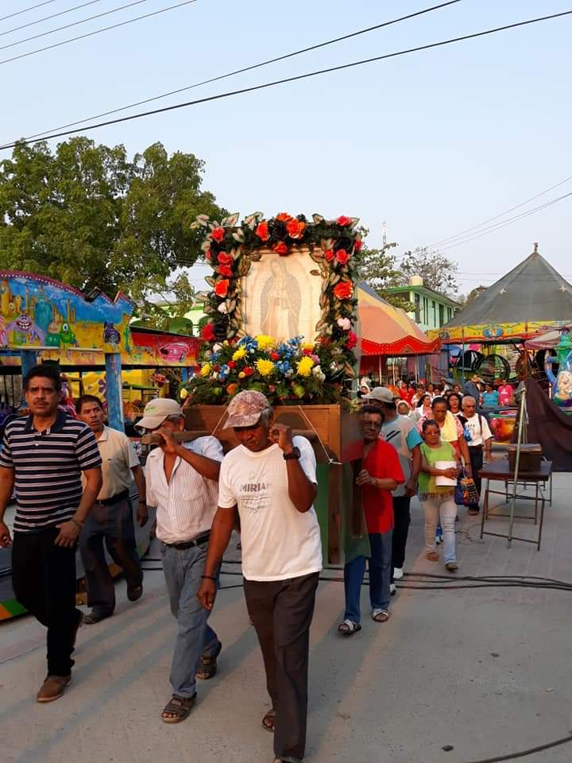
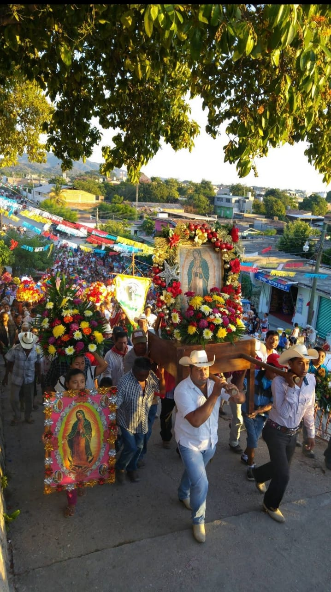
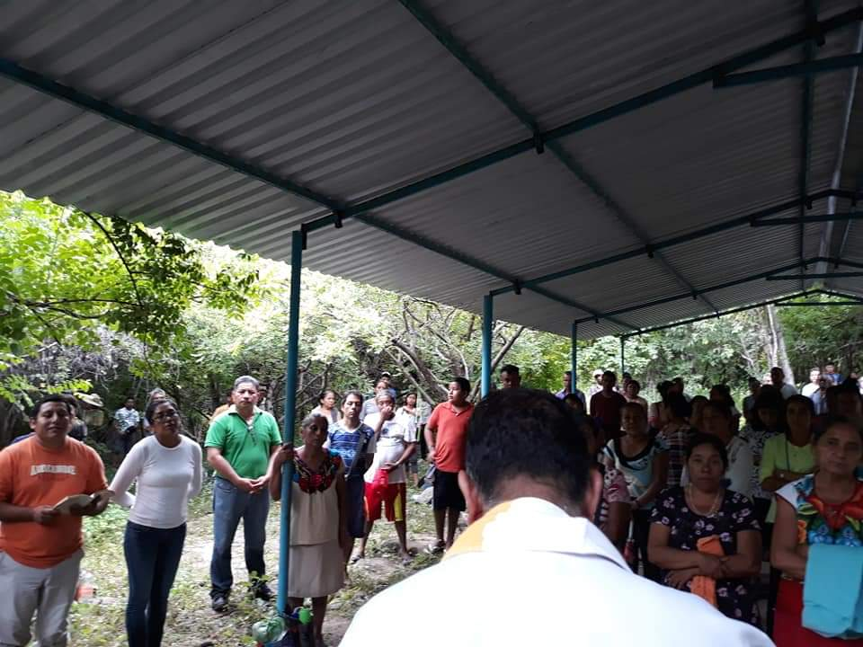
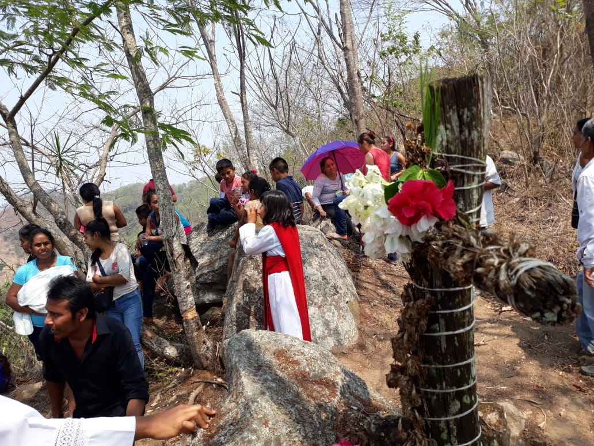
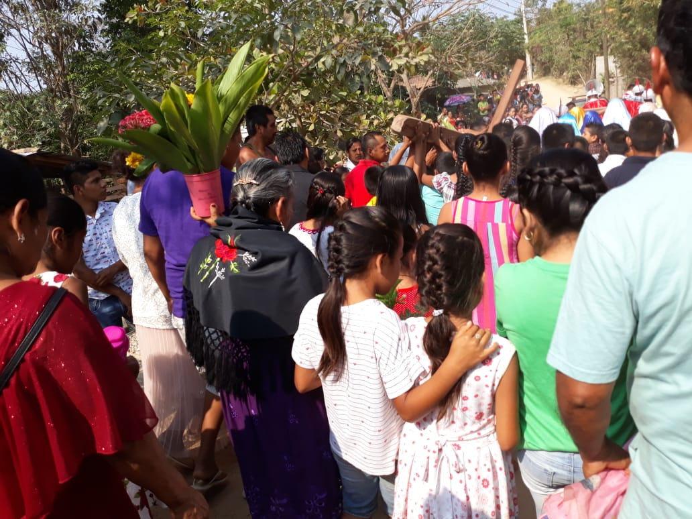
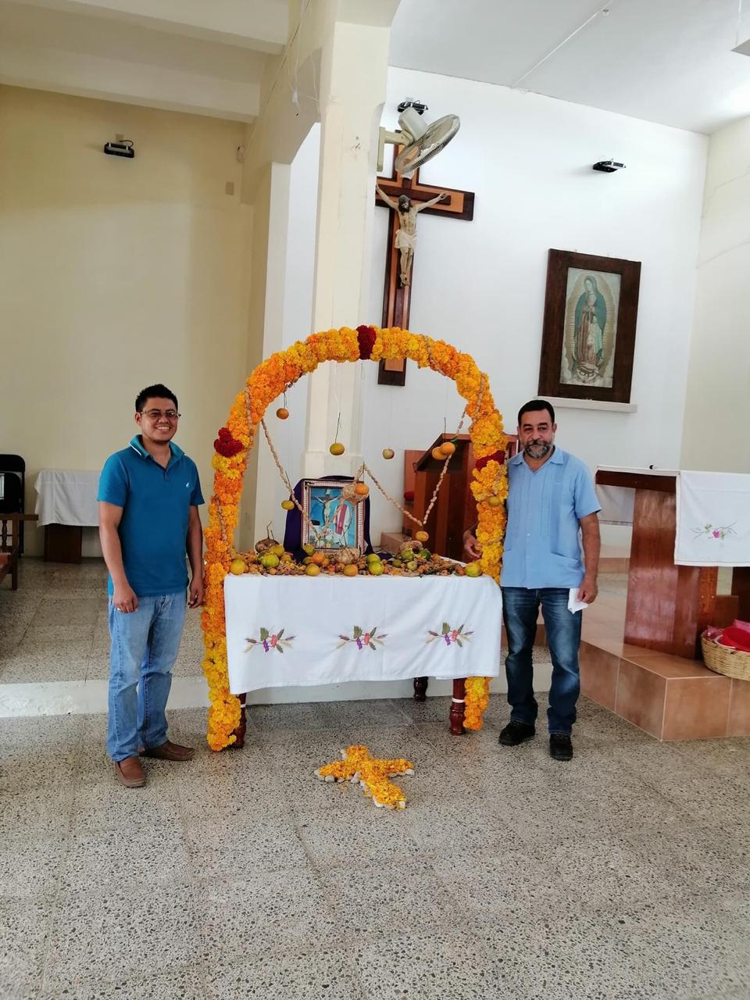
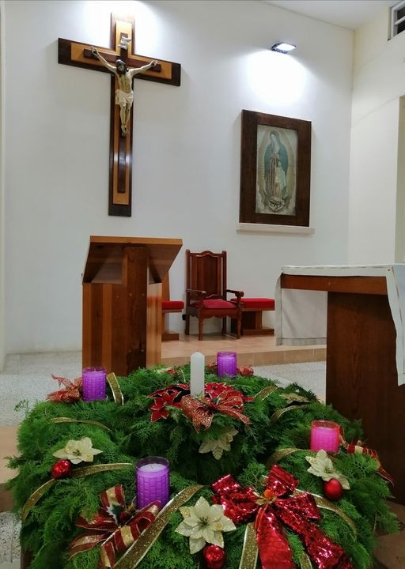
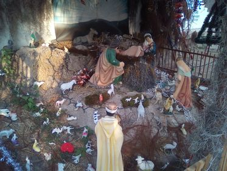
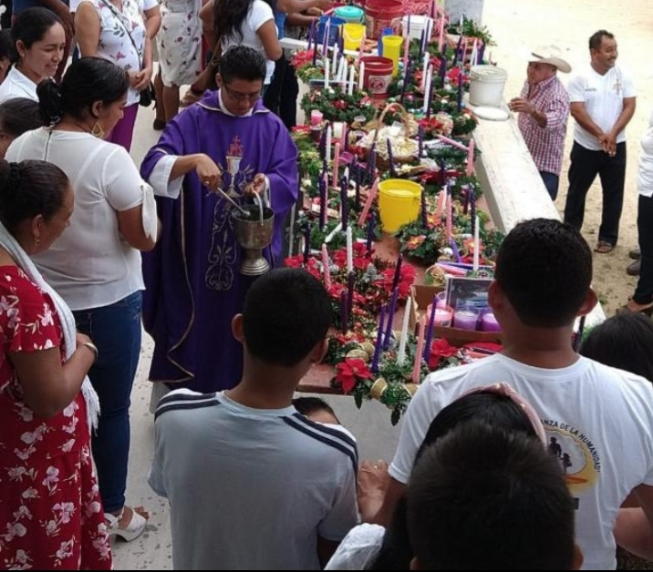

-

Esta foto corresponde al día 12 de mayo cuando se realiza la feria del pueblo en honor a la llegada a la poblaciónla de la Virgen Santa María de
Guadalupe, la patrona del pueblo. Las celebraciones eucarísticas comienzan desde el día primero y al pueblo llegan juegos mecánicos, puestos
de dulces y comidas, puestos ambulantes de ropa y trastes. Además el día 11 se lleva a cabo la quema del castillo en el atrio de la parroquia.
El ambiente que se genera entre lascostumbres y las tradiciones del pueblo tienen un significado muy profundo tanto para la iglesia como para la
persona que asiste a estos eventos. Será por eso que asisten muchas personas, no solo a la feria del pueblo sino también a la celebración
de la Santa Misa el día 12 de mayo. Para participar no se necesita más que un corazón dispuesto a entablar diálogo con la fe que
se hace presente.
-

También se celebra el día 12 de diciembre en honor a la virgen de Guadulupe recordando su aparición a Juan Diego en el cerro del Tepeyac. En esta foto vamos
llegando al atrio de la parroquia entre cantos y rosarios que se realizan en el recorrido por las calles del pueblo. Los niños y también
los jóvenes y adulto ese día se visten con prendas regionales en representación de los orígenes de la Virgen
humilde que nos ha regalado su presencia hace varios años atrás. He tenido la dicha de asistir muchas veces desde que era pequeña.
En la salida las personas se quedan a comprar algunos de los productos que ofrecen las personas fuera de la parroquia.
-

Año tras año se llevan a cabo celebraciones eucarísticas relacionadas con la cuaresma. Compartimos la fe de la preparació para la llegada
de la Pascua.
En esta foto,se está llevando a cabo la santa misa en el cerro de la Encomienda muy cerca de la playa. El viacrucis
inició a las 8:00 am y consiste en caminar por la orilla de la playa recordando los momentos que vivió antes y despué
de la resurrección y terminó con la celebración de la misa.
Es muy conmevedor participar por el ambiente que se
respira cerca de la playa.
-

En esta foto estamos en el cerro de la encomienda.Un lugar maravilloso. Testigo de la fe del pueblo y de otras comunidades. Para llegar aquí
hay que tomar un taxi en Rio Grande e indicarles que nos lleves a la encomienda. El camino es seguro y con buena vista también.
-

Esta foto es de la semana Santa del año 2019 en la comunidad, la iglesia organiza un viacrucis donde se representa el camino de Jesús hacia el calvario.
Es una procesión bastante solemne y se nota un acto de devoción por muchos de los participantes. Me gusta participar porque
experimento emociones que me hacen reflexionar.
-

El de la izquierda es el párroco Esaú y el de la derecha es el párroco Armando terminando de hacer el altar del día de muertos.
Ese día no pude asistir a la misa pero fui al día siguiente y el templo se llenó del aroma de las flores que me hizo
transportarme a mi infancia cuando mis padres me llevaban a Juquila en las mismas fechas.
-

De esta manera se prepara la iglesia para recibir el nuevo año liturgico. Para dar inicio al adviento. Veo esto y me hace recordar a las fechas cercanas a navidad
cuando el espíritu familiar y hogareño surge de la nada llenandome de nostalgia.
-

Esta imagen la tomé en la navidad del 2018, recuerdo bien que estaba saliendo de dar catequésis y ví este nacimiento y me emocionó mucho ver como
los niños se acercaban y se hacían preguntas entre ellos con respecto al nacimiento. Creo que todos en algún momento
de nuestras vidas debemos acercarnos a uno y contemplarlo con calma. A mi me hacía transportarme a otra era y al mismo tiempo me hace
sentirme feliz y agradecida por el momento que vivía.
-

Esta foto es del primer domingo de adviento en el año 2020. Mucha gente se reunió a la celebración eucarística en la mañana y se sentí
un ambiente de paz muy hermoso.Los colores, el fró y la vista desde la parroquia, nuevamente me hacín recordar cuando acompañaba
a mis padres a misa. De eso hace ya varios años y esto me permite recordarlo.
-
-